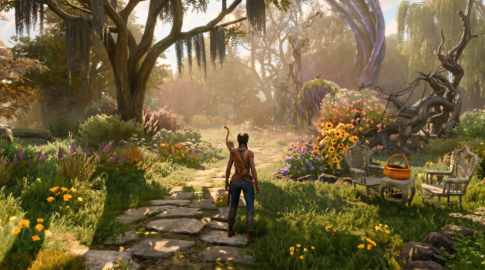

Xbox Plans to Shut Down Compulsion Games — South of Midnight Studio in Negotiations With Microsoft

Bottom line: Xbox is planning to shut down Compulsion Games — the Montreal studio behind the Peabody Award-winning South of Midnight and We Happy Few — as part of a sweeping business reset at Microsoft's gaming division. Kotaku broke the story on June 15, 2026, and Insider Gaming independently confirmed it through sources including senior studio employees. The closure would affect more than 100 workers. As of June 16, 2026, studio leadership is in active negotiations with Microsoft over the studio's fate, though no details of those discussions have been shared publicly.
This is not happening in isolation. The same day the Compulsion shutdown news broke, Xbox Game Studios head Craig Duncan announced his resignation after 15 years at Microsoft, and Chief of Staff Louise O'Connor also departed. New Xbox CEO Asha Sharma has told employees that the company needs "both optimism and realism" as it works to reset the business — and Bloomberg's Jason Schreier has reported that major Xbox layoffs are incoming. The Compulsion Games closure fits squarely into that picture.
What Kotaku Reported — Compulsion Games Set to Be Shut Down by Xbox
On June 15, 2026, Kotaku reported that Microsoft is planning to close Compulsion Games — a studio it acquired at E3 2018. The news hit the gaming community hard, largely because it came without warning. Just two months earlier, Compulsion's talent lead, Joe Palin, was actively posting job listings on LinkedIn for developers to work on "a fascinating, intriguing, brand new IP." That new project's fate is now entirely uncertain.
Multiple employees at Compulsion Games have since posted on social media indicating they are looking for new work — a clear sign that word of the planned closure reached staff before any public announcement. Kotaku confirms it published its report after employees had already been informed internally. Xbox did not respond to Kotaku's request for comment, and Microsoft has remained publicly silent on the matter.
What makes this particularly jarring is the timing. South of Midnight, Compulsion's most recent game, launched in 2025 to widespread critical praise. It pulled in more than one million players and won a Peabody Award, a BAFTA for New Intellectual Property, a D.I.C.E. Award for Outstanding Achievement in Animation, and the Games for Impact award at The Game Awards 2025. Xbox chief content officer Matt Booty praised the studio openly just weeks before this news broke, calling South of Midnight's Peabody win "such a validation of the storytelling capability of games." That makes the planned closure even more difficult to square.
The core issue, according to industry analysts, appears to be commercial performance versus critical performance. South of Midnight attracted players but may not have driven the kind of Game Pass engagement or sales revenue that Microsoft needs from its first-party studios right now. Xbox's gaming division has reportedly seen a $500 million drop in sales over the past five years, despite more than $20 billion in investments — and that financial pressure is clearly shaping decisions at the studio level.
Update: Compulsion Leadership in 'Negotiations' With Microsoft Over Studio's Fate
There is one development that adds some uncertainty to what initially looked like a done deal: Kotaku updated its original report to note that, according to a source inside the studio, Compulsion's leadership is in "negotiations" with Microsoft over the studio's future. The details of those negotiations have not been disclosed — it's not yet known whether this involves a potential buyout, a restructuring, a change in scope, or simply a formal wind-down process.
Insider Gaming, which independently confirmed the closure through multiple sources including senior employees, also noted the active negotiation element. The fact that talks are ongoing suggests the outcome is not fully finalized, and there may still be some path forward for the studio — though what that looks like remains anyone's guess at this point.
Also Read
More Gaming stories →For the 100-plus employees at Compulsion Games, the uncertainty is real and immediate. Several staff members have already begun publicly seeking new positions, which points to a strong internal belief that the studio will not continue in its current form. The Montreal game development community — already watching this situation closely — faces a potential significant talent displacement if the closure goes ahead as reported.
It is also worth noting what the broader Xbox restructuring looks like around this event. Xbox Game Studios lost both its leader (Craig Duncan) and his second-in-command (Louise O'Connor) on the same day the Compulsion news broke. New CEO Asha Sharma is widely seen as a cost-focused executive brought in to sharpen the Xbox division's financial profile — potentially in preparation for a spinoff or strategic partnership. Reports suggest Microsoft has discussed spinning Xbox off into a subsidiary similar to LinkedIn or GitHub, and a joint venture with outside parties has also been floated.
Compulsion Games' History — Contrast, We Happy Few, South of Midnight & Their Legacy
Compulsion Games was founded in Montreal in 2009 and built its reputation over three distinct projects. Their debut, Contrast (2013), was a stylish puzzle-platformer that put them on the map as a studio willing to take creative risks. We Happy Few (2018) followed — a dystopian survival game with a striking retro-British aesthetic that drew comparisons to BioShock in its worldbuilding ambition. It had a turbulent early access period but ultimately shipped as a full, polished narrative experience. Microsoft acquired the studio that same year, announcing the deal at E3 2018.
Their third and final release under Xbox ownership, South of Midnight (2025), represents what many consider the studio's artistic peak. Set in a mythologized version of the American Deep South, the game drew on folklore, blues music, and generational trauma to tell a story that felt genuinely unlike anything else on the platform. The awards haul tells its own story: Peabody Award, BAFTA for New IP, D.I.C.E. for Outstanding Achievement in Animation, and Games for Impact at The Game Awards 2025. The game was later ported to PS5 and Nintendo Switch 2 in March 2026 as part of Xbox's multiplatform push.
| Game | Year | Notable Awards / Recognition |
|---|---|---|
| Contrast | 2013 | PS4 launch title; praised for artistic direction |
| We Happy Few | 2018 | Acquired by Xbox at E3; 4M+ copies sold lifetime |
| South of Midnight | 2025 | Peabody Award, BAFTA New IP, D.I.C.E. Animation, Games for Impact (TGA 2025) |
The studio was in the middle of pre-production on a new, unannounced IP when the shutdown news broke. The fate of that project — and the creative team behind it — now hinges entirely on the outcome of the negotiations between Compulsion leadership and Microsoft.
Key Takeaways
- Xbox is planning to shut down Compulsion Games, the Montreal developer behind South of Midnight and We Happy Few, according to Kotaku and Insider Gaming (June 15, 2026).
- The closure would affect more than 100 employees; multiple staff members are already publicly seeking new positions.
- Studio leadership is in active "negotiations" with Microsoft over the studio's future — the outcome has not been determined.
- The news broke the same day Xbox Game Studios head Craig Duncan resigned after 15 years, and Chief of Staff Louise O'Connor also departed.
- Xbox CEO Asha Sharma is leading a business reset focused on profitability, with major Xbox-wide layoffs expected according to Bloomberg's Jason Schreier.
- South of Midnight won a Peabody Award, BAFTA, D.I.C.E. Award, and Games for Impact — yet commercial performance appears to have fallen short of Microsoft's targets.
Frequently Asked Questions
Is Compulsion Games being shut down by Xbox?
According to a Kotaku report published June 15, 2026, and independently confirmed by Insider Gaming, Xbox is planning to shut down Compulsion Games — the Montreal studio behind South of Midnight and We Happy Few. A subsequent update noted that Compulsion leadership is in active negotiations with Microsoft over the studio's future, though the terms of those discussions have not been disclosed.
How many employees work at Compulsion Games?
Compulsion Games' LinkedIn page lists around 90 employees, but Kotaku reports the actual headcount is higher — with the potential closure affecting over 100 workers. The studio is based in Montreal, Canada. Multiple employees have already begun publicly posting on social media seeking new positions.
What games did Compulsion Games develop?
Compulsion Games developed three titles: Contrast (2013), We Happy Few (2018), and South of Midnight (2025). South of Midnight won a Peabody Award, a BAFTA for New IP, a D.I.C.E. Award for Outstanding Achievement in Animation, and the Games for Impact award at The Game Awards 2025. The game was ported to PS5 and Nintendo Switch 2 in March 2026.
Why might Xbox be closing Compulsion Games?
Despite South of Midnight's critical acclaim and multiple awards, commercial performance appears to have fallen short of Microsoft's expectations. Xbox's gaming division has seen a $500 million drop in sales over five years despite $20 billion in investments. New Xbox CEO Asha Sharma has signaled a business reset focused on prestige brands and profitability, with major layoffs across Xbox Game Studios expected imminently.
Has Xbox officially confirmed the Compulsion Games closure?
No. Microsoft has not responded to media requests for comment. Kotaku first reported the planned closure on June 15, 2026, and Insider Gaming independently confirmed it. As of June 16, 2026, the situation remains active, with studio leadership in negotiations with Microsoft.
What other Xbox changes happened alongside the Compulsion Games news?
On June 15, 2026 — the same day the Compulsion closure was reported — Xbox Game Studios head Craig Duncan announced his resignation after 15 years at Microsoft, and Chief of Staff Louise O'Connor also departed. Bloomberg's Jason Schreier has reported that major Xbox layoffs are expected as part of Asha Sharma's business reset. There are also reports that Microsoft has discussed spinning off Xbox into a subsidiary similar to LinkedIn or GitHub.
What Happens Next for Compulsion Games
The outcome of negotiations between Compulsion leadership and Microsoft will determine whether this is a permanent closure, a restructuring, or something else entirely. Right now, the most concrete signal from the ground is that employees are already preparing to move on — which suggests the people inside the studio are not counting on those negotiations producing a happy ending.
What this moment really exposes is a widening gap between critical success and commercial viability in the current gaming market. South of Midnight is, by any creative measure, a triumph — but in the world of $20 billion gaming acquisitions and $500 million revenue shortfalls, awards and a million players apparently are not enough to guarantee a studio's future. That reality should concern everyone who cares about where game development goes from here. The industry will be watching closely to see whether Microsoft finds a way to preserve what Compulsion has built, or whether one of Xbox's most distinctive studios becomes another casualty of the great gaming business reset of 2026.

Marcus J. Holloway
Senior Gaming & Tech Journalist | Xbox & Microsoft Industry Analyst
Marcus has covered the games industry for over 12 years, with a focus on Microsoft, Xbox Game Studios, and the business of AAA game development. He has tracked every major Xbox studio acquisition, closure, and restructuring since the Bethesda deal — and has written extensively about the gap between critical success and commercial performance in modern console gaming. His analysis has been referenced by outlets including IGN, Eurogamer, and Game Developer Magazine.
💬 Questions or Comments?
Have a question about this story or want to share your thoughts? Leave a comment below!